Additional Modbus Procedures
Select any of the procedures for additional information on Modbus.
Verifying the Modbus Library
- System Manager is in Engineering mode.
- In System Browser, select Management View.
- Select Project > System Settings > Libraries > L1-Headquarter > Global.
- The Modbus library displays.
- Select the Modbus library and check the Version and Date from the General Settings expander of the Library Configurator tab.
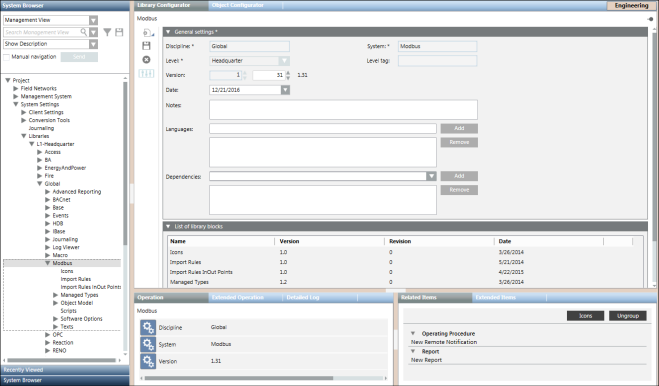
- To find the name of the library, select the Object Configurator tab.
- Press and hold the ALT key and click the library object once again in System Browser.
- The name of the library displays in the Data point name field.
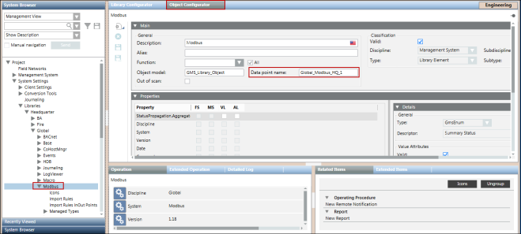

NOTE 1:
If the folder Modbus library is missing, and not available under Global Libraries in System Browser, you cannot work with Modbus. If the Modbus library is available, however, the version is not correct according to the latest technical information, you must contact the system librarian.
NOTE 2:
A default Modbus library is supplied by HQ. You can create your own library.
Defining Hierarchies
- System Browser is in the Management View.
- You have selected the desired Modbus network by navigating to Project > Field Networks.
- You have created Logical and User-Defined Views.
- In the Import tab, open the Hierarchies Mapping expander.
- The hierarchies mapping relating to the selected file is now available. For the Logical and User-Defined Views, a message suggests linking the related root node.
- In System Browser, select a view (for example, Logical View).
- System Browser displays the selected view.
- Expand the view and select the desired root and link it to the corresponding field in the Hierarchies Mapping expander. Repeat this step for all the views available (Logical and User-Defined View).
NOTE1:
The hierarchies mapping is saved only when the import starts. If you modify the mapping without starting the import, any changes are lost.
NOTE2:
Once the import is complete, you cannot change this mapping unless you delete a view node in System Browser. Doing this clears the view node, so that it is ready for editing.
Adding Poll Groups to the Custom Import Rules
- You are familiar with the concept of Poll Groups. For information, see Poll Groups.
- System Manager is in Engineering mode.
- In System Browser, select Management View.
- Select Project > System Settings > Libraries > L1-Headquarter > Global > Modbus.
- Select Import Rules In Out Points.
- Select the Custom Import Rules tab and open the Poll Groups expander.
- Click Add.
- In the Poll Group Name and Poll Interval fields, enter a name and an interval.
- Click Save
 .
.
- The poll group is added to the Custom Import Rules. You can now associate the poll group with the respective object model properties.
Editing the Modbus Interface Configuration
- You must have proper system privileges to add a Modbus driver. If you are unsure of your privileges, see your System Administrator.
- A Modbus interface object is available in System Browser.
- In System Browser, select Management View.
- Select Project > Field Networks > [Modbus Network].
- Select the Modbus interface you want to edit.
- Select the Modbus tab.
- The Modbus tab displays.
- In the Modbus tab, you can edit the following device fields:
- TCP port
- IP address
- Click Save .
Deleting a Modbus Network
- The Modbus network is available in System Browser.
- In System Browser, select Management View.
- Select Project > Field Networks > [Modbus Network].
- Click the Modbus tab.
- Modbus displays.
- Click Delete
 .
. - A confirmation message displays.
- Click Yes.
- The Modbus network is removed from System Browser and the System Manager status displays
Node Deleted Successfully.
NOTE 1:
The network structure is deleted only from the Management View. While it is still retained in the Logical and Physical Views, the points are deleted. In those views, you have to delete the structure manually. To do this, select the desired view in System Browser and then the Views tab. Click Remove to delete the structure tree.
NOTE 2:
You cannot delete the network while an import is in progress.
Create and Configure a CSV File
- You have knowledge about the format and content of the CSV file.
- Navigate to [Installation Drive]:\[Installation Folder]\GMSMainProject\profiles\ModbusDataTemplate.
- The Modbus_template_7.0_SystemDefPointInstances.csv file is provided by default.
- Create a copy of this file at any location on your hard drive and thereafter modify the information present in the [CONNECTIONS] and [DEVICES], and [POINTS] sections as per the device configuration.
- Save the CSV file.
Acknowledging Device Failure Alarms
Whenever you restart your computer, the Management System will temporarily loose connection with the devices and this will result in generation of device failure alarms. The number of alarms will increase with the number of devices that are connected to your computer and you will have to manually acknowledge the generated alarms.
Perform the following steps to ensure that the alarms are automatically acknowledged without any manual invervention when the device gets reconnected with the driver.
- System Manager is in Engineering mode
- In System Browser, select Management View.
- Navigate to Project > Field Networks> [Modbus network].
- Select the Modbus interface below the Modbus network.
- Click the Object Configurator tab.
- From the Properties expander, select the ConnState property.
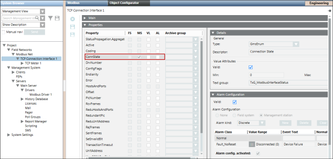
- In the Alarm Configuration expander, deselect the Valid flag in the Valid check box to configure your own Alarm Class to suppress the manual intervention.
- The color of the Valid flag changes to black. This indicates that you can now change the Alarm Class.
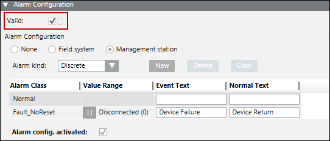
- Modify the value of the Alarm Class to Fault_NoAckNoReset.
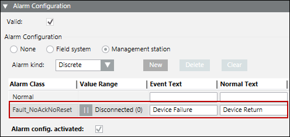
- On the Object Configurator toolbar, click Save to save the changes.
- The alarms will automatically be acknowledged without any manual intervention when the device gets reconnected with the driver.
[Example] Integrating SEM3 devices with the Management Platform
Scenario: You want to integrate SEM3 devices with the management platform and read the values of each metering module that display below the SEM3 controller.
- You have knowledge regarding the format and structure of the CSV file.
- Using the Modbus_template_7.0_SystemDefPointInstances template CSV file present in GmsMainProject\profiles\ModbusDataTemplate, add the contents to the CSV file in the [HEADER], [DRIVER], [FILEVERSION], [TEXTS], [POLLGROUPS], and [LIBRARY] sections.
- In the [CONNECTIONS] section, specify the name of the connection with the correct IP address, port number, and so on.
- In the [DEVICES] section, specify the details of the SEM3 controller such as its name, object model, and so on. During import, the Importer will consider the address details of the SEM3 controller from the Import Rules. So, nothing related to the offset needs to be specified in the CSV for the SEM3 Controller.
- Add the following information in the [POINTS] section:
- Specify the instance details of the Embedded Micro Metering Module (EMMMs), one for each EMMM. You need to give a unique name for each EMMM and specify the base offset of each EMMM as per its position in the rack. Providing the right base address is very crucial in setting the offset of each of the properties of the EMMM by the importer. For example, if you want to create instances of 3 EMMMs (Single-Phase Monitor 1, Single-Phase Monitor 2, and Single-Phase Monitor 3), then you will have to give their respective internal address from the device manual (2200, 2246, and 2292) as the offset value in the CSV file.
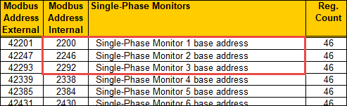
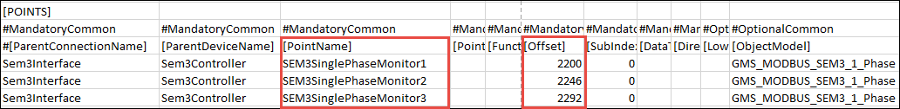
- Further, if you want to configure the alarms for each of the EMMM, you need to mention the absolute offset for each of the alarm property individually in the CSV file. You can also configure these modules to detect alarms by specifying the alarm properties.
For example, if you want to configure alarms for 3 EMMMs (Single-Phase Monitor 1, Single-Phase Monitor 2, and Single-Phase Monitor 3), then you will have to mention the internal address of the EMMM from the device manual (0, 1, 2) as the offset values for the value.info.meter_alarm_flags_read and command.meter_alarm_flags_write alarm properties. 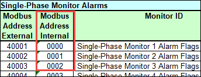
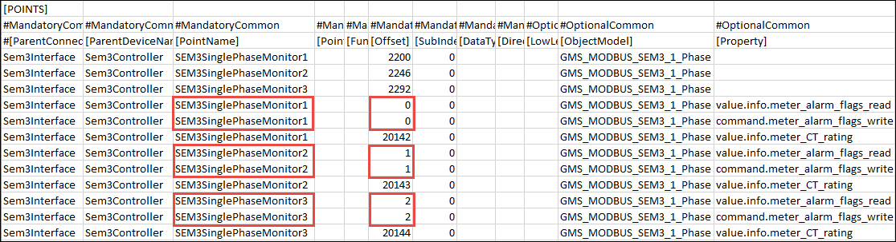
- If you want to configure the offset for the CT rating for each of the EMMM, then you need to mention the internal address for each EMMM as the Offset value for the value.info.meter_CT_rating property for each EMMM in the CSV file. For example, if you want to configure the CT rating for 3 EMMMs (Single-Phase Monitor 1, SEM3 Single-Phase Monitor 2, and SEM3 Single-Phase Monitor 3), then you will have to mention the internal address of the EMMM from the device manual (20142, 20143, 2144) as offset values for the value.info.meter_CT_rating property in the CSV file.
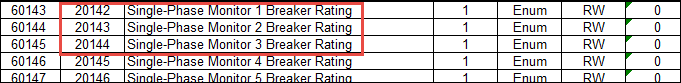
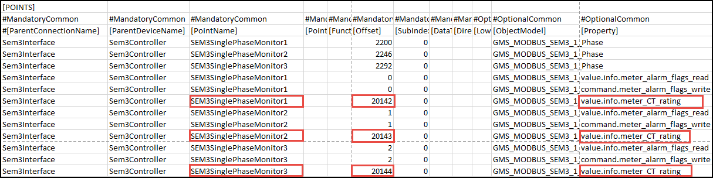
- Perform the following steps from the Integrating Modbus Devices Using Standard Object Models workflow
a. Create and start the Modbus TCP driver.
b. Create the Modbus network and associate it with the Modbus driver.
c. Import the devices to the management platform. - All the EMMMs will be displayed as children of the SEM3 controller in System Browser.
- The SEM3 devices are now integrated with the Management Platform. The SEM3 meter reading values are imported to the management platform as properties and you can access these properties from the Extended Operation tab. After the connection is established with the SEM3 controller, you can see the values of these properties in applications such as graphics, logics and so on.
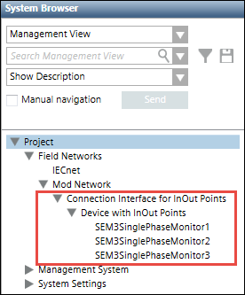
- If you have configured the alarm properties in the CSV file, you will get alarm notifications for the EMMMs as specified in the SEM3 data sheet. When you reset the alarms of the EMMM, the command is sent to the SEM3 controller and the alarm is reset in the SEM3 hardware.